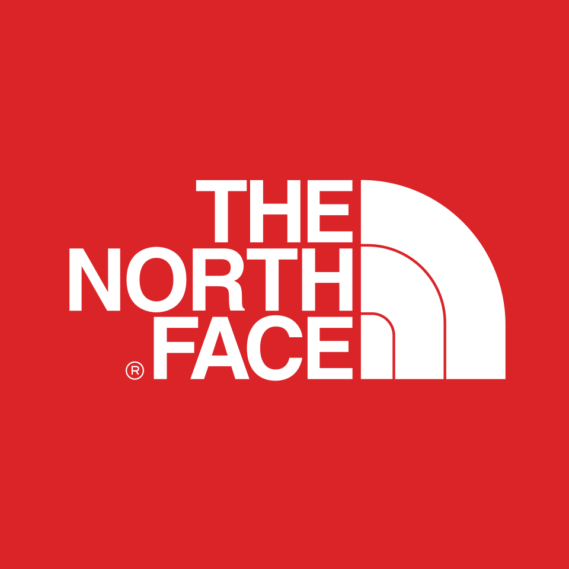

홈 > 브랜드 매거진 > 노스페이스
노스페이스
노스페이스(The North Face)는 1966년 미국에서 창립한 VF 코퍼레이션 산하의 아웃도어 의류·장비 브랜드이다.
산업 분야 스포츠·아웃도어 · 공개 등급 자료 기반 · 브랜드 평가 4.3 ★


한눈에 보는 브랜드
노스페이스(The North Face)는 1966년 더글러스 톰킨스(Douglas Tompkins)가 미국 샌프란시스코 노스비치에 등산·캠핑 용품점을 열며 출발한 아웃도어 브랜드다. 브랜드명은 북반구에서 가장 춥고 험준한 산의 북벽(north face)에서 따왔다.
현재는 미국 의류 대기업 VF Corporation 산하의 핵심 브랜드로, 전 세계 125개국 이상에서 3,500여 매장과 판매처를 운영하고 연 매출 약 34억 달러 규모를 기록하며 글로벌 아웃도어 시장을 선도한다.
브랜드 관점
경쟁 구도에서 노스페이스의 위치는 분명하다. 파타고니아(Patagonia)가 환경 행동주의와 수선·재활용 같은 가치 소비를, 아크테릭스(Arc'teryx)가 미니멀한 알파인 전문성과 고가 정책을 앞세운다면, 노스페이스는 익스트림 등반 헤리티지라는 기술 신뢰도를 바탕으로 일상복까지 아우르는 넓은 대중성을 무기로 삼는다.
눕시·데날리 같은 아이콘 제품이 전문 등반 장비에서 스트리트 패션으로 확장된 점이 차별화의 핵심이다. 한국에서는 영원무역 계열 영원아웃도어가 라이선스로 전개하며, 2000년대 후반 고가 패딩이 청소년 사이에서 '제2의 교복'으로 불릴 만큼 신드롬을 일으켰고 '등골 브레이커'라는 신조어까지 낳았다.
이는 아웃도어 의류를 또래 집단의 신분 기호로 바꾼 한국 특유의 소비 현상을 상징한다.
시작과 성장
노스페이스의 시작은 1966년 더글러스 톰킨스와 첫 부인 수지 톰킨스가 샌프란시스코 노스비치에 연 작은 등산용품점이었다. 개점일에 그레이트풀 데드의 공연이 열릴 만큼 지역 문화와 맞닿아 출발했다.
1968년 톰킨스는 지분을 햅 클롭(Hap Klopp)에게 넘겼고, 회사는 이 무렵부터 텐트·침낭 등 자체 제조에 나서며 전문 장비 브랜드로 성장했다. 1988년 데날리·에베레스트 원정을 겨냥한 익스페디션 시스템과 데날리 플리스, 1992년 출시된 눕시 다운 재킷이 잇따라 히트하며 등반가들의 신뢰를 얻었다.
2000년 VF Corporation에 편입된 뒤로는 풍부한 자본과 유통망을 발판으로 일상복 영역까지 외연을 넓혀 글로벌 브랜드로 도약했다.
브랜드 아이덴티티
노스페이스의 정체성은 탐험을 향한 끝없는 도전 정신에 뿌리를 둔다. 1971년 캘리포니아 그래픽 디자이너 데이비드 알콘이 만든 로고는 미국 요세미티 국립공원의 화강암 봉우리 하프돔(Half Dome)에서 영감을 얻어, 반원형 돔에 세 줄의 곡선을 더한 형태로 굳어졌다.
1988년 인쇄 광고에서 처음 쓰인 'Never Stop Exploring(탐험을 멈추지 마라)'는 브랜드 보이스이자 사명으로 자리 잡았다. 타깃은 전문 산악인부터 도시의 일상 소비자까지 폭넓으며, 극한의 성능과 자유로운 탐험 정신을 동시에 약속한다.
제품과 서비스
대표 제품은 1992년 처음 선보이고 1996년 사양으로 널리 알려진 눕시(Nuptse) 다운 재킷으로, 큼직한 입체 봉제와 700필 구스다운이 특징이다. 1988년 계보를 잇는 데날리(Denali) 플리스, 방수·투습 소재 고어텍스(GORE-TEX)를 쓴 셸 재킷도 간판으로 꼽힌다.
가격대는 플리스 십수만 원대부터 프리미엄 다운·고어텍스 제품 수십만 원대까지 폭넓게 형성되며, 직영 매장과 백화점, 공식 온라인몰, 아웃도어 편집숍 등 다양한 채널로 판매된다.
사람들
창업자: 더글러스 톰킨스와 케네스 클로프(Douglas Tompkins & Kenneth Klopp)가 1966년 창업했다. 소유: VF 코퍼레이션(VF Corporation, 2000년 인수).
현재 상태
노스페이스는 미국 콜로라도주 덴버에 본사를 둔 VF Corporation의 핵심 브랜드로, 2020년 그룹 본사가 덴버로 이전했다. 2024년 캐럴라인 브라운이 글로벌 브랜드 사장으로 선임됐고, 모회사 VF는 슈프림 매각 등 포트폴리오 재편을 이어가고 있다.
한국에서는 영원무역 계열 영원아웃도어가 1997년부터 사업을 전개하며, 아시아 상표권을 가진 일본 골드윈과 영원무역홀딩스가 지분을 나눠 보유한다. 영원아웃도어의 최근 연 매출은 약 9600억원 규모로 알려져 있으나, 브랜드 단위의 글로벌 세부 손익 등 일부 수치는 공식적으로 공개되지 않았다.
타임라인
BI/CI 변천사
함께 읽을 브랜드
 스포츠·아웃도어 · 편집 검수파타고니아
스포츠·아웃도어 · 편집 검수파타고니아파타고니아는 아웃도어 브랜드이면서 동시에 소비를 줄이라는 역설적 메시지로 신뢰를 쌓은 브랜드다. 제품을 파는 기업이지만 브랜드의 설득력은 자연, 책임, 오래 쓰는 태...
 스포츠·아웃도어 · 자료 기반아크테릭스
스포츠·아웃도어 · 자료 기반아크테릭스아크테릭스(Arc'teryx)는 1989년 캐나다에서 창립한 아메르 스포츠 산하의 기술 중심 아웃도어 의류·장비 브랜드이다.
 스포츠·아웃도어 · 자료 기반블랙야크
스포츠·아웃도어 · 자료 기반블랙야크블랙야크(BLACKYAK)는 BYN블랙야크가 운영하는 대한민국의 아웃도어 브랜드다. 1973년 등산용품점 '동진'에서 출발한 그룹이 1995년 '블랙야크' 브랜드를...
 스포츠·아웃도어 · 자료 기반네파
스포츠·아웃도어 · 자료 기반네파네파(NEPA)는 1996년 이탈리아에서 시작해 2005년부터 한국에서 본격 전개된 아웃도어 브랜드다.
EI
아이더
스포츠·아웃도어 · 자료 기반아이더아이더(EIDER)는 1962년 프랑스에서 설립돼 현재 한국 K2코리아가 전개·보유한 아웃도어 브랜드다.
 스포츠·아웃도어 · 편집 검수아디다스
스포츠·아웃도어 · 편집 검수아디다스아돌프 다슬러가 1948년에 설립한 독일의 스포츠 브랜드로 운동화, 운동복, 운동용품 등을 제조 · 판매함. 아디다스의 정의 및 기원 아디다스(adidas)는 바이에...
 스포츠·아웃도어 · 편집 검수푸마
스포츠·아웃도어 · 편집 검수푸마푸마(Puma)는 독일 헤르초겐아우라흐에 본사를 둔 스포츠 의류·신발 기업이다.
 스포츠·아웃도어 · 자료 기반코오롱스포츠
스포츠·아웃도어 · 자료 기반코오롱스포츠코오롱스포츠(KOLON SPORT)는 코오롱인더스트리 FnC부문이 운영하는 대한민국의 아웃도어 브랜드다. 1973년 창립한 국내 1세대 아웃도어로, 고기능성 등산·아...